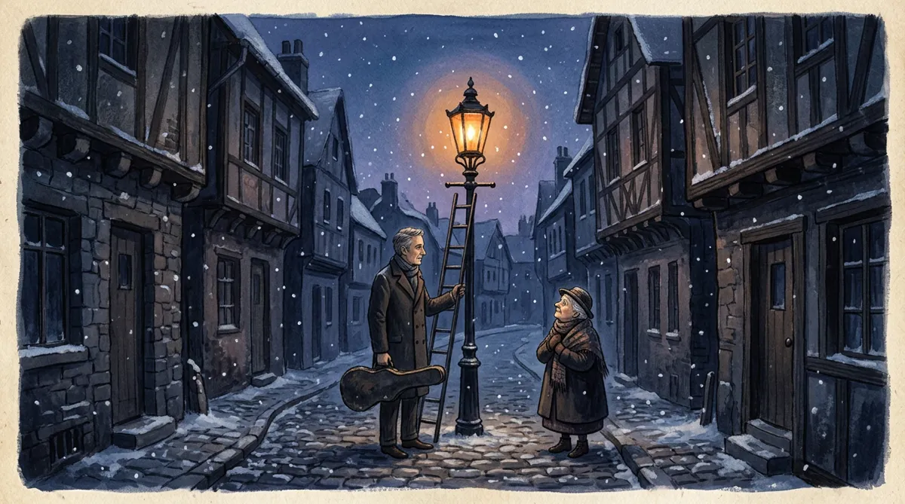

A story in one paragraph
The Last Lantern on Wren Street

Every evening for forty-one years, Elsie Marrow climbed the iron ladder at the end of Wren Street and lit the last gas lantern in the city, long after the council had wired every other corner for electric light and forgotten this one entirely. Nobody paid her, and nobody asked her to; she simply carried her matches and her small brass key the way other people carried umbrellas, out of a habit too old to question. Children dared each other to follow her, couriers set their watches by her, and once, on a winter night so cold the flame shivered, a boy with a cracked violin case sat beneath the post and played until she came down, because, he said, it seemed wrong for a light to burn with no one to keep it company. The year Elsie’s knees finally refused the ladder, she went to the end of the street at dusk expecting darkness and found the lantern already glowing, the boy — grown now, gray at the temples — standing at the bottom of the ladder with a box of matches in one hand and his violin in the other, and she understood at last that she had never been keeping the light at all; the light had been keeping all of them.